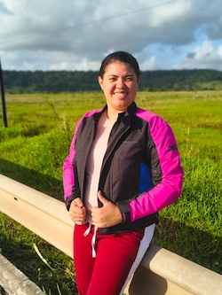

Página Inicial
Sobre mim
Olá, meu nome é Andreza, tenho 31 anos e sou casada há seis anos. Sempre fui apaixonada por animais, animes e jogos, interesses que fazem parte da minha personalidade desde a infância. Tive a oportunidade de realizar uma missão de tempo integral em Teresina, uma experiência que marcou profundamente minha vida e meu crescimento pessoal. Atualmente, estou cursando Desenvolvimento de Software pela BYU, onde tive o privilégio de integrar a primeira turma brasileira, com aulas totalmente online. Essa jornada tem ampliado minhas habilidades, minha visão profissional e meu entusiasmo pelo mundo da tecnologia. Nasci e vivi toda a minha vida em João Pessoa, na Paraíba, uma cidade que moldou quem eu sou. Ainda assim, carrego dentro de mim o desejo de conhecer o mundo além das fronteiras que sempre me acompanharam. Sonho em explorar lugares como a Coreia, o Japão e os Estados Unidos, não apenas pela beleza e cultura, mas pela experiência de crescer, aprender e enxergar a vida por novos ângulos. Sou movida pela fé, curiosidade e vontade de ir além. Sou uma pessoa determinada, alguém que não desiste facilmente daquilo que acredita. Tenho um carinho especial pelas Escrituras, e estudar cada palavra me fortalece. Gosto de ponderar sobre elas, refletir com calma e deixar que cada ensinamento encontre espaço no meu coração.
Minha foto

Cursos de certificação Web
Total de créditos para os curso listados acima é 6